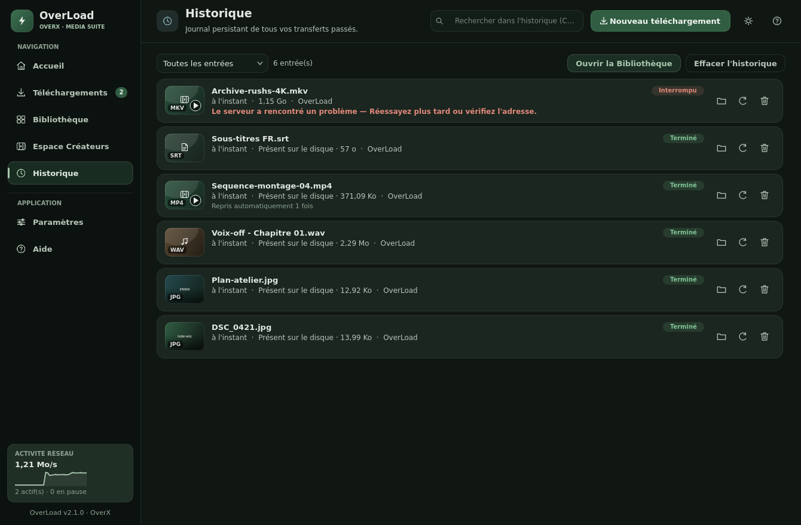
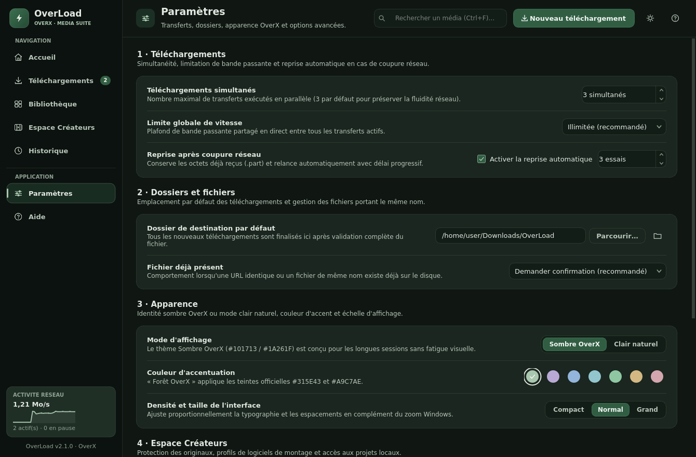
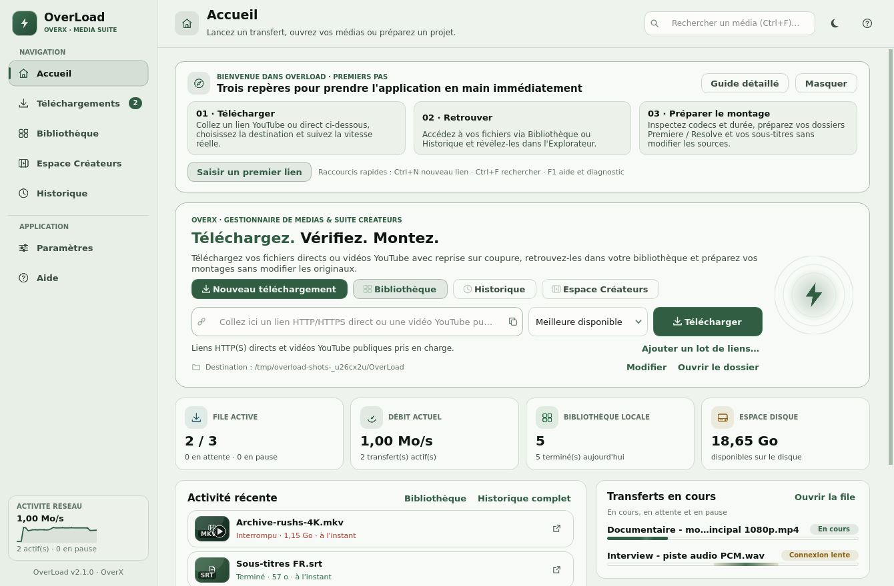

Gérer tes téléchargements
Ajoute des liens directs HTTP(S), télécharge par lots (1 à 16 simultanés), règle la limite de vitesse globale et profite de la reprise HTTP Range automatique après coupure.
PROJETS OVERX / OVERLOAD
OverLoad télécharge des fichiers depuis des liens directs HTTP(S), analyse tes médias et t'aide à préparer tes projets vidéo. Une application de bureau native Windows (OverLoad.exe), avec un espace dédié aux créateurs et une interface sombre ou claire.
Dernière version stable publiée sur GitHub · Windows 11, 64 bits.
Télécharge OverLoad-Setup.exe, puis lance l'installateur sur ton PC.

L'APPLICATION EN IMAGES · V1.1
Parcours les différentes vues d'OverLoad : tableau de bord de téléchargement, suivi en direct, Espace Créateurs, historique avec diagnostic et personnalisation des thèmes.
Colle un lien direct HTTP(S) avec validation instantanée, surveille le débit global (1,23 Mo/s), la file active, l'espace disque et tes téléchargements récents avec vignettes.

Chaque transfert affiche sa barre de progression animée, sa vitesse glissante, le temps restant et les actions Pause, Reprendre, Relancer ou Ouvrir dans l'Explorateur.

Arborescence de montage en un clic (Premiere Pro, DaVinci Resolve, Final Cut, CapCut), renommage par lots avec aperçu, extraction de sous-titres .srt et export CSV.

Filtre tes téléchargements passés, vérifie si chaque fichier est toujours présent sur ton PC et profite d'explications en français clair en cas d'interruption réseau.

Bascule entre le thème Sombre et le thème Clair, choisis parmi 6 couleurs d'accent (violet, bleu électrique, cyan, émeraude, ambre, rose) et ajuste la limite de vitesse globale.

Le thème clair conserve toute la lisibilité d'OverLoad avec des surfaces blanches, des bordures douces et un accent bleu électrique commutable sans redémarrer.
TÉLÉCHARGER · ANALYSE · ORGANISATION
Les fonctionnalités présentées ici sont intégrées dans l'exécutable Windows natif et documentées dans le dépôt officiel OverLoad.
Ajoute des liens directs HTTP(S), télécharge par lots (1 à 16 simultanés), règle la limite de vitesse globale et profite de la reprise HTTP Range automatique après coupure.
Consulte les codecs, la résolution, le débit et les pistes audio, vidéo ou sous-titres de tes fichiers locaux grâce à FFprobe embarqué. Les alertes de compatibilité t'aident avant le montage.
L'Espace Créateurs prépare l'arborescence de dossiers (Premiere Pro, DaVinci Resolve, CapCut), renomme par lots et exporte un inventaire CSV sans jamais modifier tes originaux.
OverLoad prend en charge les adresses HTTP(S) qui pointent directement vers un fichier. Il ne contourne ni les protections d'accès, ni les DRM, ni les restrictions d'une plateforme. Utilise uniquement les médias que tu es autorisé à télécharger.
INSTALLATION WINDOWS
Le site fournit le fichier ; c'est toi qui lances l'installation. Aucune installation ni mise à jour n'est déclenchée dans ton ordinateur par OverX.
Le bouton « Télécharger pour Windows » récupère OverLoad-Setup.exe depuis la dernière release stable publiée sur GitHub.
Ouvre le fichier téléchargé sous Windows 11 (64 bits), puis suis les étapes de l'installateur.
Lance l'application depuis Windows pour télécharger, analyser et organiser tes médias. Pour une prochaine version, retrouve le même bouton sur OverX.
Choisis « Version portable (.zip) », extrais l'archive dans un dossier puis lance OverLoad.exe. Les notes de version restent disponibles sur GitHub si tu souhaites consulter les changements ou les fichiers publiés.
QUESTIONS FRÉQUENTES
OverX présente l'application. Le code et les releases restent dans le dépôt OverLoad.
Oui. Le lien permanent GitHub releases/latest/download/OverLoad-Setup.exe pointe vers l'installateur de la dernière release stable. Aucun numéro de version n'est figé dans le site. Les brouillons et préversions ne sont pas ciblés.
Non. OverX fournit uniquement le lien de téléchargement. Tu télécharges l'installateur puis tu le lances toi-même sur ton PC. Le site n'ajoute aucun système de mise à jour automatique dans OverLoad.
L'installateur OverLoad-Setup.exe te guide pour installer l'application sous Windows. La version portable OverLoad-Portable-win64.zip s'extrait dans un dossier avant de lancer OverLoad.exe, sans passer par l'installateur.
LE PROJET OVERLOAD
Consulte le README, les releases et les problèmes signalés dans le dépôt officiel de l'application.